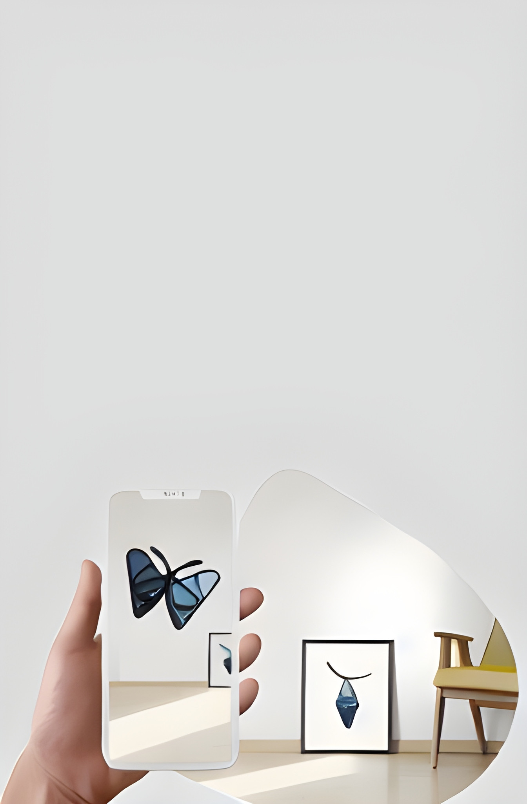

Laboratorio de Realidad Aumentada Ludique
Este proyecto fue creado para el laboratorio de Apredizaje de la Universidad de Magallanes en base a AR.js Studio. AR.js Studio es una plataforma de creación de realidad aumentada de código abierto para construir experiencias personalizadas de realidad aumentada. Puedes crear aplicaciones de realidad aumentada basadas en la ubicación o en marcadores y desplegarlas directamente en la web. ¡Esto significa que no tendrás que descargar aplicaciones adicionales para acceder a tu experiencia! Además, trabajar con AR.js Studio no requiere ningún conocimiento de programación. Puedes empezar a crear tu primer proyecto de realidad aumentada ahora mismo.
Selecciona un tipo de proyecto